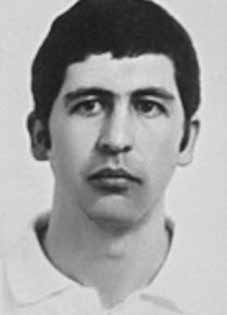

Jeová
Assis
Gomes
CIRCUNSTÂNCIAS DA MORTE
Em 9 de janeiro de 1972, Jeová Assis Gomes teria sido identificado por agentes da repressão em um campo de futebol em Guaraí.
A versão oficial para sua morte, divulgada por comunicado dos órgãos de segurança, informou: “no último domingo, foi morto a tiros, na cidade de Guaraí, norte de Goiás, o terrorista Jeová Assis Gomes, ao tentar resistir à voz de prisão que lhe fora dada por agentes policiais”. Essa versão seria modificada em apenas três dias, quando foi divulgada outra narrativa para a morte de Jeová: Em comunicado oficial dos órgãos de segurança, reproduzido no jornal O Estado de S. Paulo, de 13 de janeiro de 1972, é relatado que: “Algumas equipes de segurança deslocaram-se de Brasília para o interior de Goiás no encalço de um grupo terrorista empenhado na implantação da guerrilha rural, ao longo da Belém–Brasília. Pelos dados existentes, o referido bando era chefiado por um elemento de grande periculosidade, chegado de Cuba nos meados de 1971, onde fora preparado e incumbido de, no Brasil, ativar a guerrilha e coordenar sua implantação no interior de Goiás. A equipe de segurança abordou o referido elemento, convidando-o, discretamente, a acompanhá-la para fora do pequeno estádio. Aquiesceu, deslocando-se cerca de 15 metros, quando se jogou no chão, puxando do bolso uma granada, na tentativa de acioná-la, no que foi impedido a tiros pelos agentes, no interesse de evitar um morticínio de largas proporções, de populares inocentes”.
A família soube da morte de Jeová pela imprensa, na noite de 16 de janeiro de 1972. Seu irmão foi até Guaraí, onde obteve informações de que Jeová fora morto com um tiro pelas costas e de que estaria enterrado em um cerrado, na periferia da cidade. Não conseguiu nem o laudo, nem a certidão de óbito, tampouco os restos mortais de sue irmão.
No âmbito da CEMDP, o relator do caso, Nilmário Miranda, apresentou o relatório do então delegado de Guaraí, 2º sargento da Polícia Militar (PM), José do Bonfim Pinto: “Aos nove dias de janeiro de 1972, mais ou menos às 15:30 horas, desembarcou nesta cidade, procedente do sul, um indivíduo que, mais tarde foi identificado como Jeová Assis Gomes, terrorista de destaque da ALN. Tomou quarto num hotel local, onde deixou uma pasta que trazia ao desembarcar. Mais ou menos às 16h, rumou para o acampamento da Redobrás, em cuja quadra de esportes era disputada uma partida de futebol, ali se misturou com o povo. Mais ou menos às 16:30 horas, foi abordado por uns senhores, que mais tarde se identificaram como agentes do DOI-CODI/11ª RM, os quais, procurando afastá- lo do meio do povo, deram-lhe voz de prisão, chamando-o pelo seu nome. Vendo-se identificado, empurrou dois dos agentes e tentou empreender fuga, forçando um dos agentes a alvejá-lo. Dado a posição que recebeu o projétil [tórax], teve morte instantânea”.
Ao concluir o relatório, o delegado descreveu o que fora encontrado na pasta: mapas de Goiás, bússola, roupas, documentos, um revólver, munição e uma bomba de fabricação caseira. Posteriormente, em 15 de setembro de 1972, o delegado encaminhou correspondência ao secretário de Segurança de Goiás, dizendo que, estando impossibilitado de abrir inquérito para investigar a morte de Jeová, remetia todo o material existente na Delegacia de Polícia. Em seu voto, o relator descreveu as tentativas feitas para obter os documentos relativos à morte de Jeová.
O secretário executivo da CEMDP solicitou ao então secretário de Segurança de Goiás, Antônio Lorenzo Filho, o laudo de exame necroscópico, o relato da apreensão, a foto do corpo e toda a documentação referente a Jeová Assis Gomes. Fez, ainda, solicitação de mesmo teor ao secretário de Justiça, Virmondes Borges Cruvinel. Em 7 de junho de 1996, o superintendente da polícia técnico-científica de Goiás encaminhou ofício à CEMDP, informando que “[…] após minuciosas buscas em nossos arquivos de identificação civil, criminal e médico-legal, não encontramos nenhum registro da pessoa de Jeová Assis Gomes”, confirmando, ao que parece, que todo material referente a Jeová fora levado pelos agentes do DOI-CODI/11ª Região Metropolitana, como havia declarado o delegado da cidade, em 1972.
O Ministério Público Federal de Tocantins ingressou com uma Ação Civil Pública em novembro de 2012, requerendo a responsabilização penal e civil de Lício Augusto Ribeiro Maciel como autor e partícipe da prisão ilegal e morte de Jeová, bem como a responsabilização da União, instada também a empreender medidas para a localização do corpo. Na Ação Civil Pública é citado trecho do livro O Coronel Rompe o Silêncio, do jornalista Luiz Maklouf Carvalho, onde é transcrita parte das declarações do coronel do Exército Lício Augusto Ribeiro Maciel, apontando que estava entre os policiais que alvejaram o militante, indicando, assim, possível participação em sua morte: “A cena ainda está viva na memória dos locais, pois foi o maior acontecimento de todas as épocas, creio eu: um tiroteio num campo de futebol lotado, apenas dois atingidos, o Jeová e um militar (alguns só arranhados, de raspão e ricochete). Eu levei apenas um safanão dele, que tinha 1,90m e uns cem quilos de peso. Achei que podia imobilizá-lo”.
A Comissão Nacional da Verdade localizou documento da Agência Brasília do Serviço Nacional de Informações (SNI) que confirma que Jeová Assis Gomes foi perseguido e morto a partir da Operação Ilha, cujo objetivo foi “localizar e desbaratar núcleos terroristas instalados no norte do Estado de Goiás, constituídos por elementos da Ação Libertadora Nacional, procedentes de Cuba”, daí o nome da operação Ilha. Durante seis dias, elementos dos DOIs acima mencionados e do CIE, a partir da certificação, obtida junto a fazendeiros e boiadeiros, por fotografias, de que jeová, efetivamente, estava na região, estabeleceram três eixos de busca: Brasília-Gurupi-Araguarina; Tocantinópolis-Carolina-Balsas e Porto NacionalAlmas-Dianópolis.
O relatório da Operação Ilha, encaminhado em 2 de maio de 1972 à Presidência da República, foi produzido pelo DOI/CODI do Comando Militar do Planalto, pelo DOI da 3ª Brigada de Infantaria e pelo CIE/ADP, o que confirma a presença de agentes do DOI na execução de Jeová, conforme relatos já colhidos sobre o caso. Mais do que isso, evidencia a orientação e organização do regime para a execução de militantes que regressassem de Cuba, também observado no caso de outros militantes do Molipo, como Maria Augusta Thomaz e Márcio Beck Machado, executados no interior de Goiás.
Os restos mortais de Jeová Assis Gomes não foram localizados e identificados até a presente data, havendo apenas a informação de seu sepultamento em Guaraí. Diante da ausência de localização e de identificação completa de seus restos mortais, a Comissão Nacional da Verdade considera que Jeová Assis Gomes permanece desaparecido.
On January 9, 1972, Jeová Assis Gomes was allegedly identified by repression agents on a football field in Guaraí.
The official version of his death, released in a statement from security agencies, stated: “last Sunday, the terrorist Jeová Assis Gomes was shot dead in the city of Guaraí, north of Goiás, when he tried to resist the arrest warrant given to him by police agents.” This version would be modified in just three days, when another narrative for Jehovah's death was released: In an official statement from the security agencies, reproduced in the newspaper O Estado de S. Paulo, on January 13, 1972, it is reported that: “Some security teams moved from Brasília to the interior of Goiás in pursuit of a terrorist group committed to the implementation of rural guerrilla warfare, along Belém–Brasília. Based on existing data, The aforementioned band was led by a highly dangerous element, arrived from Cuba in mid-1971, where he had been prepared and tasked with, in Brazil, activating the guerrilla and coordinating its deployment in the interior of Goiás. The security team approached the aforementioned element, discreetly inviting him to accompany them out of the small stadium. He agreed, moving about 15 meters, when he threw himself on the ground, pulling a grenade from his pocket. attempt to activate it, which was prevented by shooting by agents, in the interest of avoiding a large-scale killing of innocent people”.
The family learned of Jehovah's death through the press, on the night of January 16, 1972. His brother went to Guaraí, where he obtained information that Jehovah had been killed with a shot in the back and that he was buried in a cerrado, on the outskirts of the city. He was unable to obtain either the report, the death certificate, or the remains of his brother.
Within the scope of CEMDP, the case's rapporteur, Nilmário Miranda, presented the report of the then delegate of Guaraí, 2nd sergeant of the Military Police (PM), José do Bonfim Pinto: “On the ninth day of January 1972, at approximately 3:30 pm, an individual disembarked in this city, coming from the south, who was later identified as Jeová Assis Gomes, a prominent ALN terrorist. He took a room at a local hotel, where he left a briefcase that he brought when he disembarked. At around 4pm, he headed to the Redobrás camp, on whose sports court a football match was being played, there he mingled with the people. At around 4:30 pm, he was approached by some gentlemen, who later identified themselves as DOI-CODI/11ª RM agents, who, seeking to remove him from the people, arrested him, calling him by his name. Seeing himself identified, he pushed two of the agents and tried to escape, forcing one of the agents to shoot him. Given the position he received the projectile [thorax], he died instantly.”
Upon concluding the report, the delegate described what was found in the folder: maps of Goiás, compass, clothes, documents, a revolver, ammunition and a homemade bomb. Subsequently, on September 15, 1972, the delegate sent correspondence to the Secretary of Security of Goiás, saying that, as he was unable to open an investigation to investigate Jehovah's death, he sent all the material existing at the Police Station. In his vote, the rapporteur described the attempts made to obtain documents relating to Jehovah's death.
The executive secretary of CEMDP asked the then Secretary of Security of Goiás, Antônio Lorenzo Filho, for the necroscopic examination report, the report of the seizure, the photo of the body and all the documentation relating to Jeová Assis Gomes. He also made a similar request to the Secretary of Justice, Virmondes Borges Cruvinel. On June 7, 1996, the superintendent of the technical-scientific police of Goiás sent a letter to CEMDP, informing that “[…] after thorough searches in our civil, criminal and medical-legal identification files, we did not find any record of the person of Jeová Assis Gomes”, confirming, apparently, that all material referring to Jeová had been taken by agents of the DOI-CODI/11th Metropolitan Region, as the delegate of the city, in 1972.
The Federal Public Ministry of Tocantins filed a Public Civil Action in November 2012, requesting the criminal and civil liability of Lício Augusto Ribeiro Maciel as the author and participant in the illegal arrest and death of Jehovah, as well as the Union's liability, also urging it to take measures to locate the body. In the Public Civil Action, an excerpt from the book O Coronel Rompe o Silêncio, by journalist Luiz Maklouf Carvalho, is quoted, where part of the statements by Army Colonel Lício Augusto Ribeiro Maciel is transcribed, pointing out that he was among the police officers who shot the militant, thus indicating possible participation in his death: “The scene is still vivid in the memory of the locals, as it was the biggest event of all times, I believe: a shooting on a crowded football field, only two hit, the Jehovah and a soldier (some just scratched, grazed and ricocheted). I only took a hit from him, who was 1.90m tall and weighed around a hundred kilos.
The National Truth Commission located a document from the Brasília Agency of the National Information Service (SNI) which confirms that Jeová Assis Gomes was persecuted and killed as a result of Operation Island, whose objective was “to locate and dismantle terrorist groups installed in the north of the State of Goiás, made up of elements of the National Liberation Action, coming from Cuba”, hence the name of Operation Island. For six days, elements from the aforementioned DOIs and the CIE, based on the certification, obtained from farmers and herdsmen, through photographs, that Jehovah was actually in the region, established three search axes: Brasília-Gurupi-Araguarina; Tocantinópolis-Carolina-Balsas and Porto NacionalAlmas-Dianópolis.
The Operation Island report, sent on May 2, 1972 to the Presidency of the Republic, was produced by the DOI/CODI of the Planalto Military Command, the DOI of the 3rd Infantry Brigade and the CIE/ADP, which confirms the presence of DOI agents in Jehovah's execution, according to reports already collected about the case. More than that, it highlights the regime's orientation and organization for the execution of militants returning from Cuba, also observed in the case of other Molipo militants, such as Maria Augusta Thomaz and Márcio Beck Machado, executed in the interior of Goiás.
The remains of Jeová Assis Gomes have not been located and identified to date, with only information about his burial in Guaraí. Given the lack of location and complete identification of his remains, the National Truth Commission considers that Jeová Assis Gomes remains missing.
El 9 de enero de 1972, Jeová Assis Gomes habría sido identificada por agentes de represión en un campo de fútbol de Guaraí.
La versión oficial de su muerte, difundida en un comunicado de los organismos de seguridad, señala: “el domingo pasado, el terrorista Jeová Assis Gomes fue asesinado a tiros en la ciudad de Guaraí, al norte de Goiás, cuando intentaba resistirse a la orden de arresto que le habían entregado agentes policiales”. Esta versión sería modificada en apenas tres días, cuando se difundió otra narrativa sobre la muerte de Jehová: En un comunicado oficial de los organismos de seguridad, reproducido en el diario O Estado de S. Paulo, el 13 de enero de 1972, se informa que: "Algunos equipos de seguridad se trasladaron desde Brasilia al interior de Goiás en persecución de un grupo terrorista comprometido con la implementación de la guerra de guerrillas rural, en la ruta Belém-Brasília. Según los datos existentes, la mencionada banda estaba liderada por un altamente peligroso El elemento, llegó desde Cuba a mediados de 1971, donde había sido preparado y encargado, en Brasil, de activar la guerrilla y coordinar su despliegue en el interior de Goiás. El equipo de seguridad se acercó al citado elemento, invitándolo discretamente a acompañarlos fuera del pequeño estadio. Éste accedió, avanzando unos 15 metros, cuando se arrojó al suelo, sacando una granada de su bolsillo, lo que fue impedido con disparos de los agentes, con el fin de evitar una matanza de gran magnitud. de gente inocente”.
La familia se enteró de la muerte de Jehová a través de la prensa, la noche del 16 de enero de 1972. Su hermano se dirigió a Guaraí, donde obtuvo información de que Jehová había sido asesinado de un tiro en la espalda y que estaba enterrado en un cerrado, en las afueras de la ciudad. No pudo obtener ni el informe, ni el certificado de defunción, ni los restos de su hermano.
En el ámbito del CEMDP, el relator del caso, Nilmário Miranda, presentó el informe del entonces delegado de Guaraí, sargento segundo de la Policía Militar (PM), José do Bonfim Pinto: “El día nueve de enero de 1972, aproximadamente a las 15.30 horas, desembarcó en esta ciudad un individuo, procedente del sur, quien luego fue identificado como Jeová Assis Gomes, destacado terrorista del ALN. Alquiló una habitación en un hotel local, donde dejó un maletín que trajo al desembarcar. Sobre las cuatro de la tarde se dirigió al campamento de Redobrás, en cuya cancha polideportiva se jugaba un partido de fútbol, allí se mezcló con la gente. Alrededor de las 16:30 horas fue abordado por unos señores, quienes luego se identificaron como agentes del DOI-CODI/11ª RM, quienes buscando apartarlo del pueblo lo detuvieron llamándolo por su nombre. Al verse identificado, empujó a dos de los agentes e intentó escapar, obligando a uno de los agentes a dispararle. Dada la posición en la que recibió el proyectil [tórax], murió instantáneamente”.
Al concluir el informe, el delegado describió lo encontrado en la carpeta: mapas de Goiás, brújula, ropa, documentos, un revólver, municiones y una bomba casera. Posteriormente, el 15 de septiembre de 1972, el delegado envió correspondencia al Secretario de Seguridad de Goiás, diciendo que, al no poder abrir una investigación para investigar la muerte de Jehová, envió todo el material existente en la Comisaría. En su votación, el relator describió los intentos realizados para obtener documentos relacionados con la muerte de Jehová.
El secretario ejecutivo del CEMDP solicitó al entonces secretario de Seguridad de Goiás, Antônio Lorenzo Filho, el informe del examen necroscópico, el informe de la incautación, la foto del cuerpo y toda la documentación relativa a Jeová Assis Gomes. También hizo un pedido similar al secretario de Justicia, Virmondes Borges Cruvinel. El 7 de junio de 1996, el superintendente de la policía técnico-científica de Goiás envió una carta al CEMDP, informando que “[…] luego de minuciosas búsquedas en nuestros archivos de identificación civil, penal y médico-legal, no encontramos ningún registro de la persona de Jeová Assis Gomes”, confirmando, al parecer, que todo el material referente a Jeová había sido tomado por agentes del DOI-CODI/11ª Región Metropolitana, como delegado de la ciudad, en 1972.
El Ministerio Público Federal de Tocantins interpuso una Acción Civil Pública en noviembre de 2012, solicitando la responsabilidad penal y civil de Lício Augusto Ribeiro Maciel como autor y partícipe de la detención ilegal y muerte de Jehová, así como la responsabilidad de la Unión, instándola también a tomar medidas para localizar el cuerpo. En la Acción Civil Pública se cita un extracto del libro O Coronel Rompe o Silêncio, del periodista Luiz Maklouf Carvalho, donde se transcribe parte de las declaraciones del Coronel del Ejército Lício Augusto Ribeiro Maciel, señalando que él estaba entre los policías que dispararon contra el militante, indicando así una posible participación en su muerte: “La escena aún está viva en la memoria de los lugareños, ya que fue el mayor evento de todos los tiempos, creo: un tiroteo en un Campo de fútbol abarrotado, sólo dos impactos, el Jehová y un soldado (algunos simplemente arañaron, rozaron y rebotaron. Sólo recibí un impacto de él, que medía 1,90 m y pesaba alrededor de cien kilos).
La Comisión Nacional de la Verdad localizó un documento de la Agencia Brasilia del Servicio Nacional de Información (SNI) que confirma que Jeová Assis Gomes fue perseguida y asesinada como resultado de la Operación Isla, cuyo objetivo era “localizar y desmantelar grupos terroristas instalados en el norte del Estado de Goiás, integrados por elementos de la Acción de Liberación Nacional, provenientes de Cuba”, de ahí el nombre de Operación Isla. Durante seis días, elementos de los mencionados DOI y del CIE, a partir de la certificación, obtenida de agricultores y pastores, a través de fotografías, de que Jehová efectivamente se encontraba en la región, establecieron tres ejes de búsqueda: Brasilia-Gurupi-Araguarina; Tocantinópolis-Carolina-Balsas y Porto NacionalAlmas-Dianópolis.
El informe de la Operación Isla, enviado el 2 de mayo de 1972 a la Presidencia de la República, fue elaborado por el DOI/CODI del Comando Militar de Planalto, el DOI de la Tercera Brigada de Infantería y el CIE/ADP, el cual confirma la presencia de agentes del DOI en la ejecución de Jehová, según informes ya recabados sobre el caso. Más que eso, resalta la orientación y organización del régimen para la ejecución de militantes que regresan de Cuba, observada también en el caso de otros militantes de Molipo, como Maria Augusta Thomaz y Márcio Beck Machado, ejecutados en el interior de Goiás.
Los restos de Jeová Assis Gomes no han sido localizados e identificados hasta la fecha, existiendo sólo información sobre su entierro en Guaraí. Ante la falta de ubicación e identificación completa de sus restos, la Comisión Nacional de la Verdad considera que Jeová Assis Gomes continúa desaparecido.